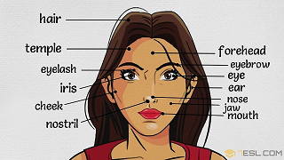
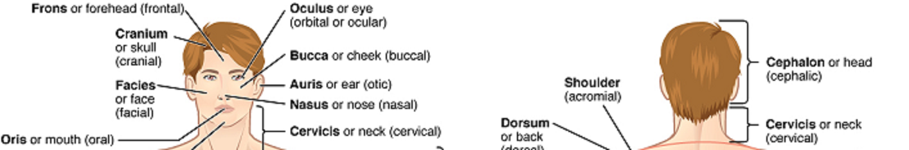

The Head
 General Structures
The human head is the home of all the body's major sensory organs, which is composed of the cranial and facial parts. It contains the brain, the most important part. Encased in the skull, the brain is the body's centralized conveyor of all information. Much of its job involves receiving information from the rest of the body, interpreting that information, and then guiding the body's response to it. The cranium is partly covered with hair.
The parts of the face are the forehead, the temples, the ears, the eyes with eyebrows, the cheeks, the nose, the jaw, the mouth and the chin.
The main parts of the mouth are lips, the tongue, the teeth, the palate and the gums.
The eyes are protected by eyelids and eyelashes. The eyes are the organs of sight. The nose of smell, and the ears are the organs of hearing.
The nerves of the skin are organs of touch. The five senses are: sight, hearing, smell, taste and touch.
Although the nose, ears, tongue, nerves, and others parts are important, without a healthy brain, they would all be useless.
| Information/Organs | Ears | Eyes | Nose | Tongue | Nerves |
|---|---|---|---|---|---|
| Facts | Sound waves travel through the ears and vibrate membranes and tiny bones. Those signals are sent to the brain via the vestibulocochlear nerve. | Light rays pass through the eye and refract through the vitreous humor, or liquid part of the eye. This stimulates the optic nerve, which sends the information to the brain. | Air comes into the body through the nose. As it passes over the specialized cells of the olfactory system, the brain recognizes and identifies smells. Hairs in the nose clean the air of foreign particles. As air moves through the nasal passages, it is warmed and humidified before it goes into the lungs. | The taste buds collected the tastes, and three nerves (facial, glossopharyngeal, and vagus) send the information to the brain where it is interpreted. | There are the touch receptors, called tactile corpuscles, are mostly located in the dermis layer of the skin around hair follicles. |
| Functions | The outer, middle, and inner ear are responsible for collecting auditory information. Other than hearing, your inner ears also help you keep your balance. | Each eye constantly adjusts the amount of light it lets in, focuses on objects near and far, and produces continuous images that are instantly transmitted to the brain. | The nose is the body's primary organ of smell and also functions as part of the body's respiratory system. | Thanks to taste buds, the food you eat is vibrant with flavor whether food is sweet, salty, sour, or bitter. The tongue also helps you speak; its movement inside the mouth helps form sounds that become words. | Nerves all over the body help you sense heat, cold, pain, pressure, and texture. |
| Effect to Health | Diabetes, heart disease, stress, antibiotics and obesity are the five factors that can increase the risk of hearing loss. | Eye strain, sunshine, stress, lack of sleep. | Poluted evvironment or tempurature changes could cause illness to the nose. | Increasing age, food catefories, smoking habit and obesity. | Stress, unhealthy intakes and habits such as smoking, drinking, lacking of sleep time,... can directly affect to the brain in general and destroy nerves cells. |
| Stay Healthy | Regularly check up and always keep ears in hegiene condition. Avoid listening too loud sounds or in a long time constantly. | Use saline water everyday for clean eyes and nose. Prevent touching hands/fingers to the eyes or nose. | Have a proper servings everyday and should not eat/drink too hot or too cold. For having bad habits such as smoking, giving up is the best way to stay healthy. | The most important factor is the adequate deep sleep through the night. Ensure to maintain sleep duration from 6-8 hours per day. Also reduce the pressure that may cause stress such as work, study...; spending about 3 hours each day to relax and relief the tired nerves. | |